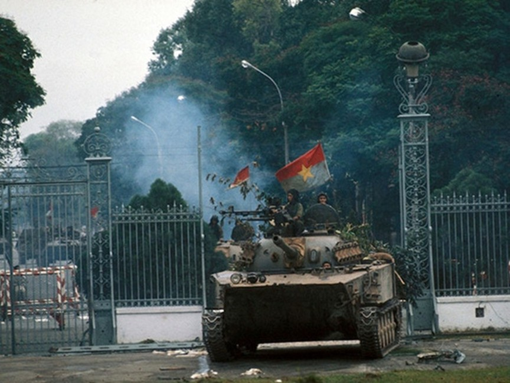
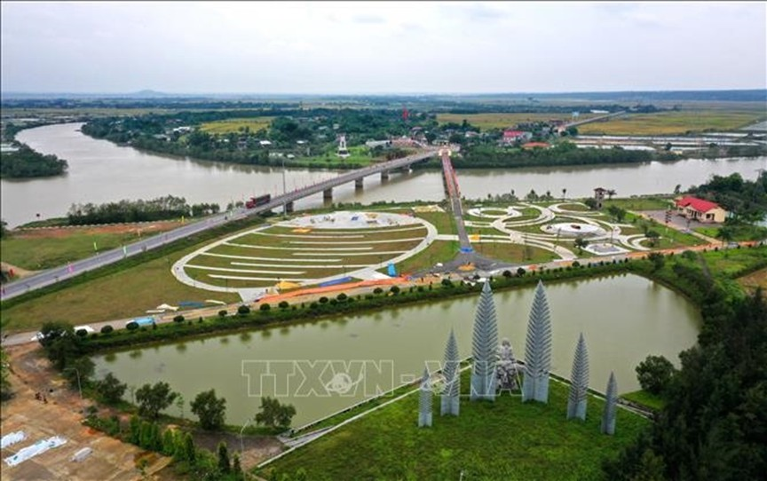

Ngày giải phóng Miền Nam Thống Nhất đất nước

Ngày lễ trọng đại 30 tháng 4
Ngày lễ trọng đại 30 tháng 4
Ngày 30-4-1975 là mốc son chói lọi trong lịch sử dân tộc Việt Nam. Vào ngày này, Quân đội nhân dân Việt Nam mở đợt tiến công cuối cùng, tiến thẳng vào trung tâm Sài Gòn, đánh chiếm Dinh Độc Lập, giải phóng hoàn toàn miền Nam, thống nhất đất nước.
Lúc 5 giờ 30 phút sáng ngày 30-4-1975, các cánh quân chủ lực của ta đồng loạt tiến công vào nội đô Sài Gòn. Các tuyến phòng thủ cuối cùng của chính quyền Sài Gòn nhanh chóng bị đập tan, tạo điều kiện cho quân ta tiến thẳng vào trung tâm đầu não.
Đến 11 giờ 30 phút cùng ngày, sau khi Dinh Độc Lập hoàn toàn bị chiếm giữ, Tổng thống ngụy quyền Dương Văn Minh đã tuyên bố đầu hàng vô điều kiện trước Quân Giải phóng.
Âm thanh lời tuyên bố đầu hàng của Dương Văn Minh (tư liệu lịch sử):
Ngày 1-5-1975, toàn bộ lực lượng còn lại của quân ngụy tan rã, ta giải phóng hoàn toàn miền Nam, kết thúc thắng lợi Chiến dịch Hồ Chí Minh lịch sử.
Đây là thắng lợi vĩ đại nhất, trọn vẹn nhất trong lịch sử đấu tranh giải phóng dân tộc của nhân dân Việt Nam, kết thúc 30 năm chiến tranh lâu dài, gian khổ và ác liệt, mở ra kỷ nguyên mới: kỷ nguyên độc lập, thống nhất và đi lên xây dựng đất nước.
Ngày 30-4-1949, nhân kỷ niệm Ngày Quốc tế Lao động (1-5), Chủ tịch Hồ Chí Minh gửi thư chúc mừng đồng bào và chiến sĩ, phân tích ý nghĩa ngày 1-5 và nêu rõ những nhiệm vụ quan trọng của các tầng lớp nhân dân trong giai đoạn đẩy mạnh cầm cự, tích cực chuẩn bị tổng phản công.
Ngày 30-4-1952, Chính phủ Việt Nam Dân chủ Cộng hòa cử ông Nguyễn Lương Bằng làm Đại sứ đặc mệnh toàn quyền đầu tiên của Việt Nam tại Liên Xô, đánh dấu bước phát triển quan trọng trong quan hệ đối ngoại.
Ngày 30-4-1969, Ủy ban Thường vụ Quốc hội khóa III thông qua Điều lệ Hợp tác xã nông nghiệp, góp phần củng cố và hoàn thiện quan hệ sản xuất mới ở nông thôn, tạo điều kiện cho nông nghiệp phát triển bền vững.
Từ ngày 30-4 đến 30-6-1970, Quân Giải phóng miền Nam Việt Nam, với tinh thần “giúp bạn là giúp mình”, đã phối hợp cùng quân và dân Campuchia chiến đấu dũng cảm, đập tan cuộc hành quân xâm lược Campuchia của quân Mỹ và chính quyền Sài Gòn.
Ngày 30-4-1992, Cục Tác chiến điện tử được thành lập, là cơ quan tham mưu quan trọng cho Bộ Quốc phòng và Bộ Tổng Tham mưu trong chỉ đạo hoạt động tác chiến điện tử toàn quân.
Ngày 30-4-1993, Quỹ Hỗ trợ tài năng trẻ chính thức ra mắt, góp phần phát hiện, bồi dưỡng và phát huy tài năng trẻ của đất nước.
Ngày 30-4-2014, tại Khu di tích đôi bờ Hiền Lương – Bến Hải, tỉnh Quảng Trị long trọng tổ chức Lễ thượng cờ Thống nhất non sông và đón nhận bằng xếp hạng Di tích Quốc gia đặc biệt.
Chiến thắng của Chiến dịch Hồ Chí Minh năm 1975 đã chứng minh trí tuệ, bản lĩnh và tài thao lược của Đảng và Chủ tịch Hồ Chí Minh trong việc lãnh đạo cách mạng Việt Nam đi đến thắng lợi hoàn toàn.
Đồng thời, thắng lợi này cũng thể hiện tinh thần bất khuất, tự lực, tự cường, ý chí kiên cường và lòng yêu nước nồng nàn của dân tộc Việt Nam trong cuộc đấu tranh chống giặc ngoại xâm.
Ngày 30 tháng 4 hằng năm là ngày lễ lớn của toàn dân tộc, nhắc nhở các thế hệ hôm nay và mai sau về sự hy sinh to lớn của cha ông, từ đó trân trọng, gìn giữ và phát huy thành quả độc lập, tự do mà đất nước ta có được ngày hôm nay.